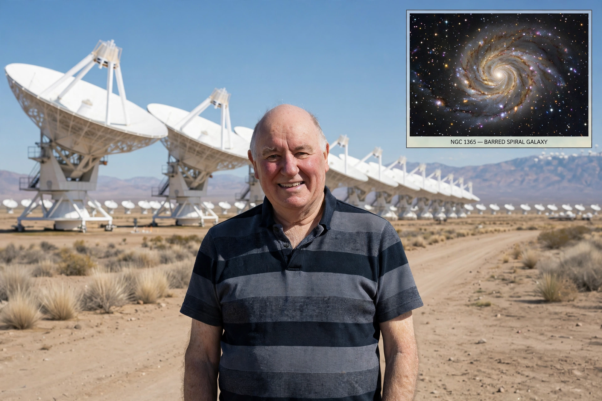

Malcolm Longair
Malcolm Sim Longair (born 18 May 1941) is a British physicist and astronomer. He was the ninth Astronomer Royal for Scotland (1980–1990), Regius Professor of Astronomy at the University of Edinburgh, and director of the Royal Observatory, Edinburgh, before becoming Jacksonian Professor of Natural Philosophy at the University of Cambridge and head of the Cavendish Laboratory (1997–2005).

| Malcolm Longair | |
|---|---|
| Born | 18 May 1941, Dundee, Scotland |
| Fields | Astrophysics, cosmology, radio astronomy |
| Institutions | University of Cambridge; University of Edinburgh |
| Known for | Astrophysical Quantities; galaxy evolution; head of the Cavendish Laboratory |
Career
Longair studied at the University of St Andrews and completed his PhD at Cambridge, where he joined Martin Ryle's radio astronomy group at the Cavendish Laboratory. His research centred on high-energy astrophysics, extragalactic radio sources, and the evolution of galaxies and quasars. From 1980 to 1990 he held the Edinburgh posts, overseeing the Royal Observatory during the development of the UK Infrared Telescope and the James Clerk Maxwell Telescope in Hawaii.
Returning to Cambridge, he succeeded as Jacksonian Professor and head of the Cavendish Laboratory. Longair is a gifted lecturer and writer: his textbook Theoretical Concepts in Physics grew out of a celebrated lecture course, and he revised the standard reference Astrophysical Quantities. He delivered the Royal Institution Christmas Lectures in 1990 on the origins of the universe. He was appointed CBE in 2000.